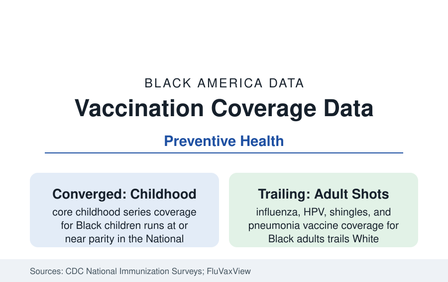

Black Public Health
Vaccination in Black America: Coverage Data from Flu Seasons to the Pandemic
Black vaccination rates trail on influenza and HPV, converge on childhood series, and wrote the pandemic's most-tracked equity data. The CDC coverage files.

Vaccination is preventive care's purest data — a single act, a countable coverage rate — and its Black data divide cleanly: childhood series coverage at or near parity in the National Immunization Survey, adult coverage trailing across nearly every product, and the COVID-19 campaign's month-by-month equity curve the most scrutinized dataset in public health history. This article reports the coverage files.
Childhood: The Parity the System Built
The childhood series (the MMR, DTaP, polio, and Hib schedule) records the public system's structural success: Black children's coverage runs within a few points of White children's in the NIS — the Vaccines for Children program (which buys half the nation's childhood vaccines for the uninsured and Medicaid-eligible) plus school-entry requirements flattening the access gradient that governs adult care. The remaining gaps are specific: series completion on schedule (the timeliness data show Black children more often late on the multi-dose sequences), HPV vaccination (the adolescent platform — initiation has converged toward parity in recent NIS-Teen editions, completion trailing), and the influenza season's annual child rates (trailing in most FluVaxView seasons). The kindergarten exemption data add the geographic texture — nonmedical exemptions cluster in communities that are not, in the main, Black — a nuance the coverage debates often miss.
Adults: The Consistent Trail
Adult coverage is the file's standing gap. Seasonal influenza vaccination for Black adults runs in the range of ten points below White adults in typical FluVaxView seasons (both below the 70 percent target), with the occupational bright spots instructive: health care workers under employer mandates converge toward parity, demonstrating the access-and-default mechanism again. Pneumococcal and shingles coverage for older Black adults trail by similar margins in the NHIS data; Tdap and the RSV products entering the senior schedule inherit the pattern; the pharmacy-access research supplies part of the geography (pharmacy deserts in the same districts as the other access files) and the recommendation data supply the clinical part — a provider's recommendation is the strongest single predictor of adult vaccination in the survey literature, and its distribution follows the usual-care access of the insurance profile. Workplace and church-based flu programs post the intervention data's best local numbers, the community-channel pattern of the whole reference.
The COVID Campaign: An Equity Curve in Public
The pandemic vaccine rollout generated coverage data at unprecedented resolution — the CDC's county and demographic trackers updated in near-real time — and its Black curve is now the canonical case study. The early months (eligibility phased through the occupational and age tiers, supply routed through hospitals and mass sites) opened a wide gap: Black vaccination rates ran far below White rates into the spring of 2021, and the KFF tracking decomposed the causes week by week — access barriers (site locations, appointment systems, documentation fears, work schedules) dominating the early gap, with hesitancy measures (the 'wait and see' share, highest among Black respondents early) declining steadily as the campaign localized through churches, barbershops, employers, and door-to-door programs. By the campaign's later phases the first-dose gap had narrowed to a few points nationally — never fully closing, widening again in the booster rounds as the campaign's intensity faded — leaving the dataset as the reference's clearest demonstration that coverage gaps are substantially logistics, measured in the open.
Trust, History, and the Survey Evidence
The hesitancy literature's Black data require the precision the surveys supply: measured distrust of the medical system runs higher among Black respondents across the trust series, with the historical record (the Tuskegee study's forty years the ever-cited anchor, the everyday access experiences the more proximal driver in the qualitative research), yet behavior converges when access and trusted channels align — the childhood parity and the mandate settings standing as the proof cases. The misinformation era's data (exposure concentrated in the social platforms, correction research ongoing) layer over a population whose baseline skepticism the same surveys show is substantially a demand for evidence and respect rather than a refusal of science — the KFF finding that 'wait and see' respondents mostly vaccinated when their questions were answered being the file's most policy-relevant result.
Reading the Vaccination Data
The coverage files reduce the health system's equity question to its simplest measurable form — did the shot reach the arm — and their answer is the section's thesis in miniature: where the system builds free, local, default-on delivery (childhood vaccines, workplace mandates), the gaps close to points; where it relies on individual navigation of the adult care maze, they persist at ten points and more. The product was never the problem. The delivery is the data.
More in Black Public Health
Hypertension Among Black Adults: Prevalence, Control, and Consequences
About 55 percent of Black adults have hypertension — the highest rate of any U.S. group. Prevalence, onset, control, and the stroke, heart, and kidney consequences in the data.
Diabetes Among Black Adults: Prevalence and Complications
Nearly one in five Black adults has diabetes, diagnosed or undiagnosed — and its complications fall with particular weight. The CDC data on prevalence, control, and outcomes.
Black Life Expectancy: The Gap at Birth and Its Causes
Black life expectancy at birth is about 73 years, roughly five years below the national figure — the summary measure of every health gap in this section. The CDC data.
Source: Centers for Disease Control and Prevention, National Immunization Surveys, FluVaxView, and COVID Data Tracker; Kaiser Family Foundation vaccine monitoring research.